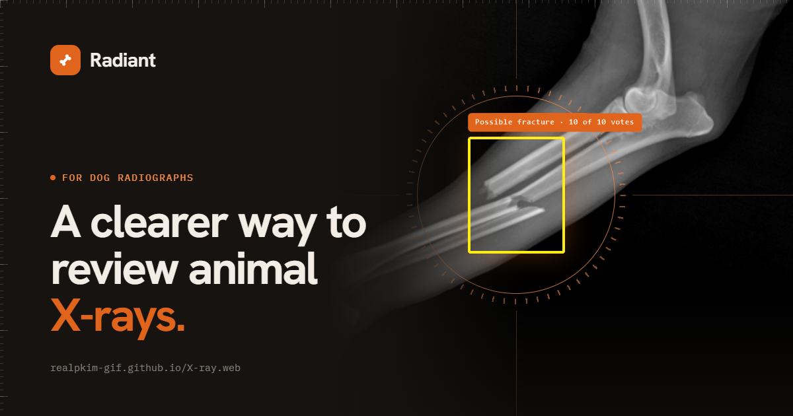

An AI fracture check for dog X-rays.
Radiant is a free tool. You upload a radiograph (X-ray) of a dog or cat; an AI model running in your browser checks it for a possible bone fracture, draws a box where it looked, and tells you how confident it is.
Sign in with Google to open Radiant
How it works
- Upload a JPG or PNG X-ray of a dog or cat.
- The model runs on your device. A fracture-detection model checks that the image is an X-ray, then looks for possible fractures. The image is not uploaded to us for analysis.
- See the result: "possible fracture" or "no fracture found", a confidence level, a heatmap of where the model looked, and a box around the area of concern.
Why it asks you to sign in with Google
Google sign-in is used for two things only: showing which account is signed in, and saving your scans to a private, hidden app folder in your own Google Drive so they appear on any device you use. Radiant requests your name, email address, profile photo and access to its own app folder in Drive (drive.appdata). It cannot see your other Drive files, and it never sells or shares your data.
What Radiant does not do. Radiant only analyzes veterinary X-rays for bone fractures. It does not generate, edit or alter images, does not create images of people, and is never used to create sexual or intimate imagery of anyone. It is not a diagnostic tool and does not replace a veterinarian.